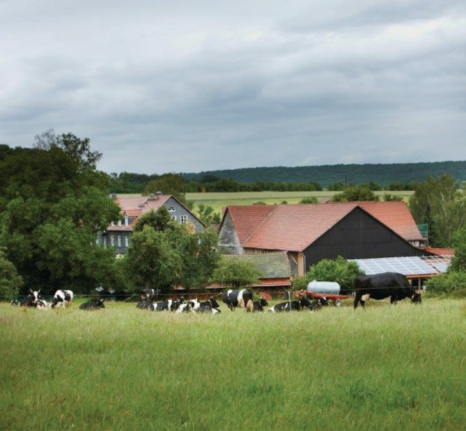
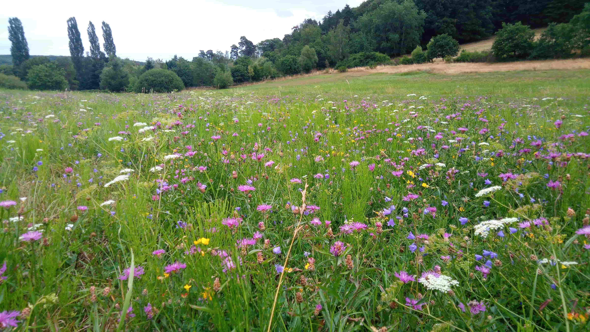
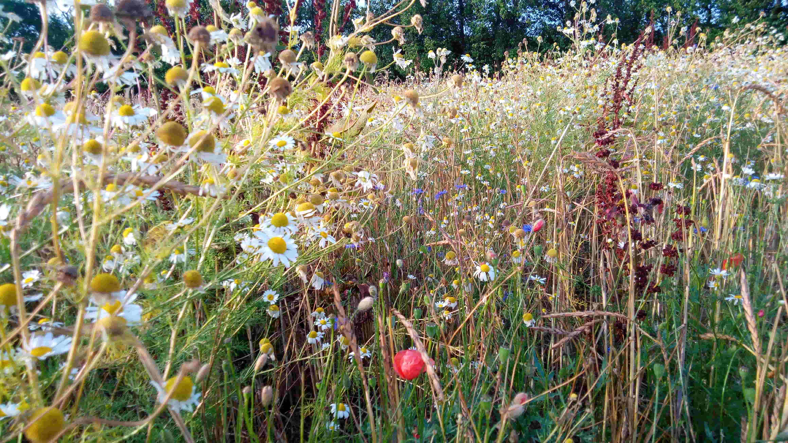
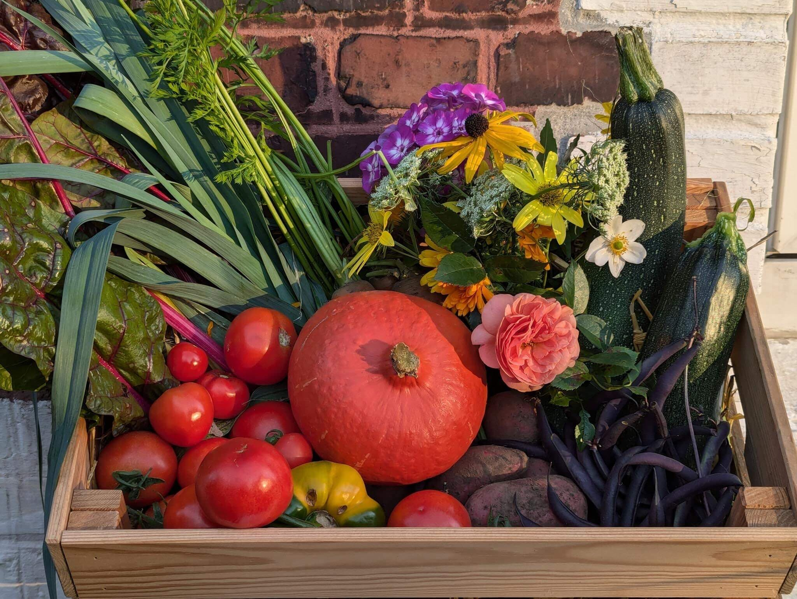
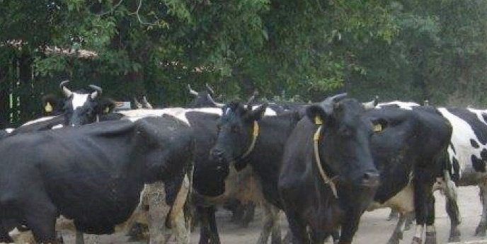

Nachhaltige Landwirtschaft fördern • Kulturlandschaft sichern • Wissen vermitteln

Der gemeinnützige Verein Stedebach e.V. ist Eigentümer von einem der vier Höfe in Stedebach, einem kleinen Ort in der Nähe von Marburg. Ziel ist die dauerhafte und nachhaltige Sicherung der Flächen und die Förderung biologisch-dynamischer Landwirtschaft. Gemeinsam mit dem Landwirt kümmern sich die Mitglieder des Vereins um den Erhalt der Gebäude aber auch um die Entwicklung der vereinseigenen landwirtschaftlichen Flächen im Hinblick auf Natur- und Artenschutz. Neben dem Erhalt und der Entwicklung von Hof und Flächen ist ein weiteres wichtiges Ziel die Vermittlung von Wissen über traditionelle Landwirtschaft und den hohen Wert einer intakten Kulturlandschaft für die Natur.
Seit über 40 Jahren wird hier nach Demeter-Richtlinien ökologisch gewirtschaftet. Damit gehört Hof Stedebach zu den Pionieren und ältesten landwirtschaftlichen Betrieben in Hessen, die auf der Grundlage der biologisch dynamischen Wirtschaftsweise arbeiten.
60 Milchkühe, 40 Jungrinder und Kälber leben auf dem Hof. Die Kühe behalten ihre Hörner und werden in einem offenen Boxlaufstall gehalten. Im Sommer sind sie tagsüber auf der Weide, zu den Melkzeiten gibt es zusätzlich frisches Ackerfutter, im Winter werden die Tiere mit Heu und Silage vom eigenen Betrieb gefüttert. Eine flächengebundene Viehhaltung in einem möglichst geschlossenen Betriebsorganismus ist ein wichtiges Merkmal der biologisch-dynamischen Landwirtschaft.

Der anfallende Mist, der Einsatz der biologisch-dynamischen Präparate und eine vielgliedrige Fruchtfolge sorgen für den Aufbau und Erhalt der Bodenfruchtbarkeit. Kleegras, Dinkel, Roggen, Hackfrüchte und Weizen folgen in langjährigem Wechsel aufeinander. Auf den Einsatz von chemischen Spritz- oder Düngemitteln wird konsequent verzichtet.

Im kleinen Hofladen gibt es je nach Saison frisches Gemüse, Kartoffeln, Linsen und Getreide aus eigenem Anbau.


📅 19. April 2026 • 11–14 Uhr
Erleben Sie den ersten Weidegang unserer Kühe und feiern Sie mit uns den Start der Weidesaison!